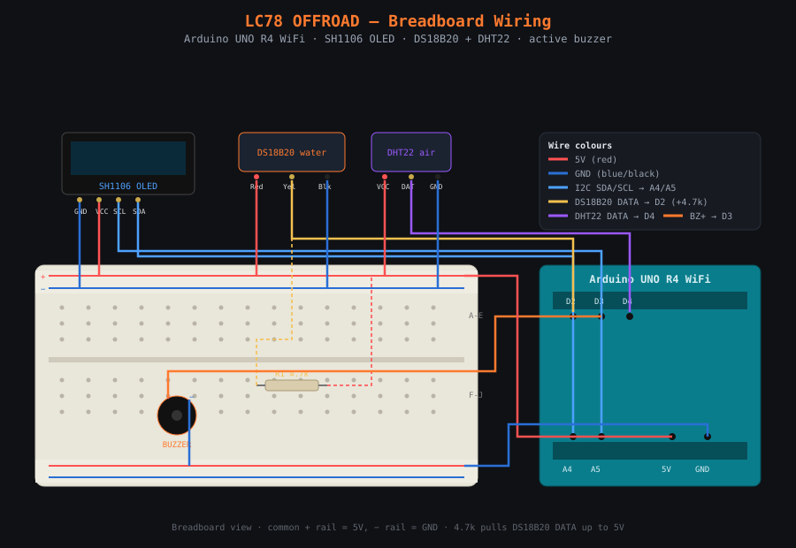

LC78 OFFROAD — Water + Air Monitor
sketches/water_monitor/water_monitor.ino.
This is the interactive version of README.md — same content, click-through for newcomers.1 What it does
- Reads water temperature from a DS18B20 waterproof probe.
- Reads air temperature + humidity from a DHT22.
- Shows all three on a 1.3" SH1106 OLED, over a scrolling off-road truck animation.
- Prints a status line to Serial every 2 s.
- Sounds an active buzzer in three stages based on the water temperature.
2 Hardware (bill of materials)
| # | Part | Notes |
|---|---|---|
| 1 | Arduino UNO R4 WiFi | 5 V logic |
| 2 | SH1106 OLED 1.3" 128×64, I2C | address 0x3C |
| 3 | DS18B20 waterproof probe | OneWire; needs a 4.7 kΩ pull-up |
| 4 | DHT22 (AM2302) breakout | temp + humidity; has its own pull-up |
| 5 | Active buzzer | fixed tone, on/off only |
| 6 | 4.7 kΩ resistor | DS18B20 data pull-up to 5 V |
| 7 | Breadboard + jumper wires |
digitalWrite(HIGH). It has one fixed pitch — loudness cannot be changed in code.
So "alarm" vs "warn" is steady vs pulsing, not louder vs softer.3 Pin map
| Part | Pin on part | UNO R4 pin |
|---|---|---|
| OLED | SDA | A4 |
| OLED | SCL | A5 |
| OLED | VCC / GND | 5V / GND |
| DS18B20 (water) | Red (VCC) | 5V |
| DS18B20 (water) | Black (GND) | GND |
| DS18B20 (water) | Yellow (DATA) | D2 |
| DS18B20 (water) | 4.7 kΩ resistor | between DATA and 5V |
| DHT22 (air) | VCC / + | 5V |
| DHT22 (air) | DATA / OUT | D4 |
| DHT22 (air) | GND / − | GND |
| Buzzer | + | D3 |
| Buzzer | − | GND |
4 Circuit diagram
Hover a wire to highlight it. [4.7k] is the DS18B20 pull-up. Every VCC is 5 V, every GND common.
Signal summary
| Pin | Direction | Connected to |
|---|---|---|
D2 | in | DS18B20 water probe (OneWire, 4.7k pull-up to 5V) |
D3 | out | active buzzer (+) |
D4 | in | DHT22 air temp + humidity (single-wire) |
A4 | I2C | OLED SDA (data) |
A5 | I2C | OLED SCL (clock) |
5V | power | OLED, DS18B20, DHT22, 4.7k pull-up |
GND | power | OLED, DS18B20, DHT22, buzzer (−) |
Breadboard wiring view
The same circuit as it sits on a breadboard — components, jumper wires and the 4.7 kΩ pull-up in place.

4b How the temperature sensors work
From the analog physics inside the chip to the °C/°F your code prints.
The full chain:
physical heat → analog voltage inside the chip → ADC → digital number → 1-wire protocol on the pin → Arduino library decodes → your °C/°F math
1 · The physics — heat becomes a voltage
| Mechanism | Used by | What changes with temperature |
|---|---|---|
| Silicon bandgap | DS18B20, DHT22, LM35, TMP36 | forward voltage of a diode/BJT junction |
| Thermistor (NTC) | cheap probes, 3D printers | resistance of a ceramic bead |
| Thermocouple | kilns, ovens | tiny voltage from two metals (Seebeck effect) |
The DS18B20 uses the silicon bandgap effect: a forward-biased junction's voltage drops about −2 mV per °C. Running two junctions at different current densities and subtracting gives a voltage proportional to absolute temperature (the PTAT voltage). That PTAT voltage is the analog signal the chip measures.
V_junction ^ |\ | \____ higher temp → lower junction voltage | \____ (about -2 mV per °C) | \____ +------------------> temperature
2 · Inside the DS18B20 — analog → digital, all on-chip
[junction/PTAT] analog voltage ∝ temperature
|
[analog front-end] amplifies + references the PTAT voltage
|
[sigma-delta ADC] converts the analog voltage to a digital count
|
[temperature register] signed 16-bit number, units of 1/16 °C
|
[1-Wire interface] sends those bytes out on the single data pinThe ADC resolution is configurable — exactly what your code sets:
waterSensor.setResolution(10); // line 159 of water_monitor.ino
| Resolution | Step size | Conversion time | This project |
|---|---|---|---|
| 9-bit | 0.5 °C | ~94 ms | |
| 10-bit | 0.25 °C | ~188 ms | ← used here |
| 11-bit | 0.125 °C | ~375 ms | |
| 12-bit | 0.0625 °C | ~750 ms |
The chip stores temperature as a signed 16-bit integer in units of 1/16 °C.
So raw 0x0191 = 401, and 401 ÷ 16 = 25.0625 °C. The library does that
division, which is why you get a float back.
3 · The 1-Wire protocol — how the number crosses the pin
The DS18B20 uses Dallas 1-Wire: one data line (D2) carries both
directions. The line idles HIGH, so it needs the 4.7 kΩ pull-up to 5 V — both
ends talk by briefly pulling it LOW. No pull-up → the line floats → you see W:--.
A reading is a two-step dance, and the code reads first, then requests:
if (millis() - lastWater > 500) {
float t = waterSensor.getTempCByIndex(0); // read result of the LAST request
...
waterSensor.requestTemperatures(); // kick off the NEXT conversion
lastWater = millis();
}This is deliberately non-blocking: the conversion started 500 ms ago is already finished, so the read is instant; then a fresh conversion starts for next time. The 500 ms interval comfortably exceeds the 188 ms conversion, so the value is always ready — the animation never freezes.
A disconnected probe returns DEVICE_DISCONNECTED_C (−127 °C):
if (t != DEVICE_DISCONNECTED_C) { waterOK = true; }
else waterOK = false; // missing probe → W:-- , never false-triggers the buzzer4 · Inside the DHT22 — same idea, different packaging
- Humidity: a capacitor whose dielectric absorbs water vapour. More moisture → higher capacitance (analog), converted to %RH on-chip.
- Temperature: a bandgap element, same principle as section 1.
One reading is 40 bits: 16 humidity, 16 temperature, 8 checksum. Temperature is
a signed integer in units of 0.1 °C (raw 0x00E6 = 230 → 23.0 °C).
Your code just asks:
float t = dht.readTemperature(); // line 202 — °C float h = dht.readHumidity(); // line 203 — %RH
The DHT22 samples at only ~0.5 Hz, so it is read every 2 s; faster polling
returns stale data or NaN, caught here:
if (!isnan(t) && !isnan(h)) { airOK = true; }
else airOK = false;5 · The "true analog" case (for comparison): LM35
Not used here, but this is what "analog temperature sensing" usually means — the Arduino's own 10-bit ADC does the conversion. An LM35 outputs 10 mV per °C:
int raw = analogRead(A0); // 0..1023 (10-bit ADC) float volts = raw * (5.0 / 1023.0); // ADC count → volts (5V reference) float celsius = volts * 100.0; // 10 mV/°C → ×100
Each ADC count ≈ 4.9 mV ≈ 0.49 °C of resolution. Moving the ADC inside the chip (like the DS18B20) avoids noise pickup, wire resistance and rail wobble corrupting a long analog wire.
6 · The °C → °F conversion
waterF = t * 9.0 / 5.0 + 32.0; // °F = °C × 9/5 + 32 // 25 × 9 / 5 + 32 = 77.0 °F
9.0 / 5.0, not 9 / 5.
Integer division 9 / 5 equals 1 (remainder dropped), which breaks the
formula. The .0 forces floating-point division (1.8). A classic C/C++ trap — the code gets it right.Quick reference
| DS18B20 (water) | DHT22 (air) | |
|---|---|---|
| Sensing element | silicon bandgap junction | bandgap temp + capacitive humidity |
| Where the ADC lives | inside the chip | inside the chip |
| On-wire format | 1-Wire, signed, 1/16 °C | single-wire, 40 bits, 0.1 °C |
| Pull-up? | yes, 4.7 kΩ | breakout has its own |
| Resolution here | 10-bit → 0.25 °C | 0.1 °C |
| Max read rate | ~5 Hz | ~0.5 Hz (every 2 s) |
| Pin | D2 | D4 |
| Library call | getTempCByIndex(0) | readTemperature() / readHumidity() |
| Error sentinel | DEVICE_DISCONNECTED_C (−127) | NaN |
Full text: sensor-explainer.md
5 Buzzer logic (based on WATER temperature)
Click a temperature zone to see what the buzzer, screen and Serial do:
| Water temp | Buzzer | Screen | Serial |
|---|---|---|---|
| below 35 °C | silent | (none) | OFF |
| 35 to 40 °C | beep on/off every 400 ms | flashing WARM | BEEP |
| above 40 °C | ON continuously | flashing W HOT! | LOUD-CONT |
Thresholds (top of the sketch)
#define WARN_LIMIT 35.0 // beep from here #define ALARM_LIMIT 40.0 // loud continuous above here
digitalWrite only — never tone().
Mixing tone() and digitalWrite on the same pin jams the pin (the tone() timer
stays attached), which was an earlier bug. One method for all states fixes it.OFF and never false-triggers the alarm.6 Display layout
+--------------------------------------------+ | W:24.5' FriedRust | <- water C, brand | A:22.0' | <- air C | H:48% [ WARM ] | <- humidity, warn box | /\ __ | | ___/\/ \___ /LC78\___ /\/\ | <- truck on scrolling ground |__/ \_/ \_/ \________| +--------------------------------------------+
W:water °C,A:air °C,H:humidity % — top-left.FriedRustbrand — top-right.WARM/W HOT!box flashes only when the buzzer is active.- The truck hops when a boulder passes under it. Animation is non-blocking.
7 Serial output (9600 baud)
Water: 24.5C/76.1F Air: 22.0C/71.6F Hum:48% Buzzer: OFF Water: 37.2C/99.0F Air: 22.1C/71.8F Hum:47% Buzzer: BEEP Water: 92.3C/198.1F Air: 22.1C/71.8F Hum:47% Buzzer: LOUD-CONT
Printed once every 2 s (paced by the DHT22, which can only read that often).
8 Read timing
| Sensor | Interval | Why |
|---|---|---|
| DS18B20 water | 0.5 s | fast, non-blocking request/read |
| DHT22 air | 2 s | DHT22 hardware limit (~0.5 Hz) |
| Display + buzzer | every loop (~40 ms) | smooth animation, responsive beep |
All reads are non-blocking (millis() timers), so the animation never stalls.
9 Libraries
Install via Tools → Manage Libraries:
- Adafruit SH110X (pulls in Adafruit GFX + Adafruit BusIO)
- Adafruit GFX Library
- OneWire (Paul Stoffregen)
- DallasTemperature (Miles Burton)
- DHT sensor library (Adafruit) — say yes to Adafruit Unified Sensor
../../libraries/.9b Build and upload from the command line (arduino-cli)
Install the board core (one-time)
The UNO R4 WiFi uses the Renesas core. Install it once:
arduino-cli core update-index arduino-cli core install arduino:renesas_uno
Check it is there: arduino-cli core list should show arduino:renesas_uno.
Find your board's port
Plug the board in over USB, then:
arduino-cli board list
Example output:
Port Protocol Type Board Name FQBN Core /dev/cu.usbmodemF412FA9C12345 serial Serial Port (USB) Arduino UNO R4 WiFi arduino:renesas_uno:unor4wifi arduino:renesas_uno
The Port column is what you pass to -p below. By platform:
| OS | Port looks like | Tips |
|---|---|---|
| macOS | /dev/cu.usbmodemXXXX | list with ls /dev/cu.usbmodem* |
| Linux | /dev/ttyACM0 (or ttyUSB0) | may need sudo usermod -aG dialout $USER, then re-login |
| Windows | COM5 | also in Device Manager → Ports (COM & LPT) |
arduino-cli board list.Compile and upload
Run these from the repo root. --libraries ./libraries uses the repo's vendored libraries,
so you do not have to install them by name.
# compile arduino-cli compile \ --fqbn arduino:renesas_uno:unor4wifi \ --libraries ./libraries \ sketches/water_monitor # find your board's port (Port column; e.g. /dev/cu.usbmodemXXXX) arduino-cli board list # upload (replace the port with the one from 'arduino-cli board list') arduino-cli upload \ --fqbn arduino:renesas_uno:unor4wifi \ --libraries ./libraries \ -p /dev/cu.usbmodemXXXX \ sketches/water_monitor
Watch the Serial output from the CLI (9600 baud, matches the sketch):
arduino-cli monitor -p /dev/cu.usbmodemXXXX -c baudrate=9600
10 Bring-up (step by step)
Click each step as you finish it — your progress shows in the sidebar and is saved in this browser.
- Blink test — upload
sketches/blink_led/blink_led.ino. The on-board LED path (D8) proves the toolchain and the board. - Find the OLED — upload
sketches/i2c_address_finder/i2c_address_finder.ino, open Serial at 115200. It should report0x3C. If it reports something else, changeSCREEN_ADDRESS. - Wire the sensors per the pin map above. Double-check the DS18B20 4.7 kΩ pull-up.
- Upload
sketches/water_monitor/water_monitor.ino. Open Serial at 9600. - Verify: the OLED shows the truck + readouts; Serial prints the status line.
- Test the buzzer: warm the water probe past 35 °C (beeps), then past 40 °C (steady).
11 Troubleshooting
| Symptom | Likely cause | Fix |
|---|---|---|
| Blank OLED | wrong I2C address or SDA/SCL swapped | run the I2C scanner; A4=SDA, A5=SCL |
SH1106 allocation failed on Serial | OLED not found on I2C | check 0x3C, wiring, 5V/GND |
Water shows W:-- | probe unplugged or missing pull-up | add 4.7 kΩ DATA→5V, check D2 |
Air/Hum shows -- | DHT22 wiring or too-fast reads | check D4, VCC, GND; keep 2 s interval |
| Buzzer never sounds | wrong pin or buzzer polarity | buzzer + to D3, − to GND |
| Buzzer stuck / weird | mixing tone() with digitalWrite | use digitalWrite only (active buzzer) |
| Values look wrong on first read | sensors still warming up | ignore the first second or two |
12 Tuning
- Thresholds: edit
WARN_LIMIT/ALARM_LIMIT. - Beep speed: change
400in the beep block (ms per on/off toggle). - Animation speed: change the final
delay(40)andscroll += 2inloop(). - DS18B20 precision/speed:
waterSensor.setResolution(10)— 9..12 bits.